Hong Kong Supermarket
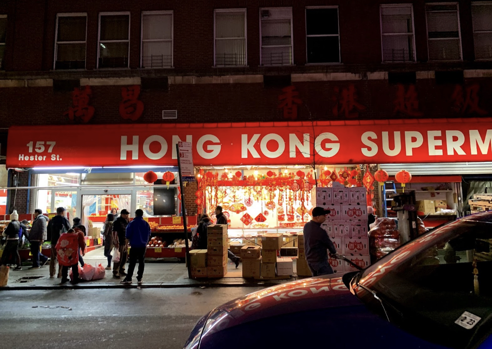 Best deals for asian groceries. Be wary in the summer months though, produce can get wilted as it’s not always the best quality!
Bangkok Center Grocery
Bangkok Center Grocery
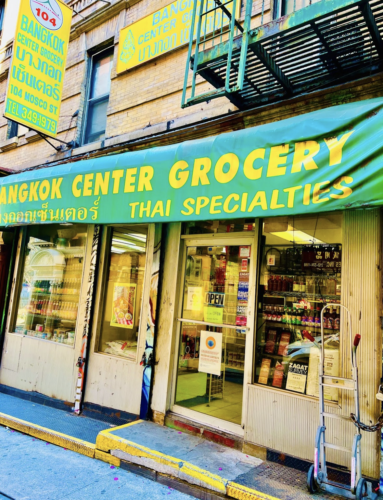 Very quant little shop. Is the only thai grocery store in manhattan. Doesn’t have much fresh produce or snacks, but lots of pantry stockers.
Raku
Raku
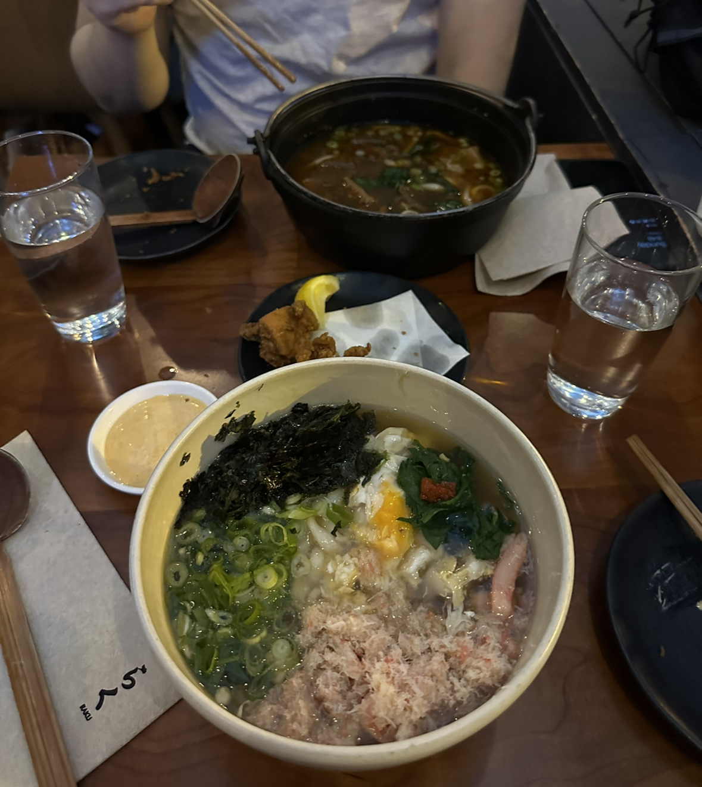 The best udon shop I’ve even been to. They make their own noodles in house and their broths feel like a warm hug. Best in the winter months. Recommendation: Kani anake - Snow crab in thick egg soup
Cho Dang Gol
Cho Dang Gol
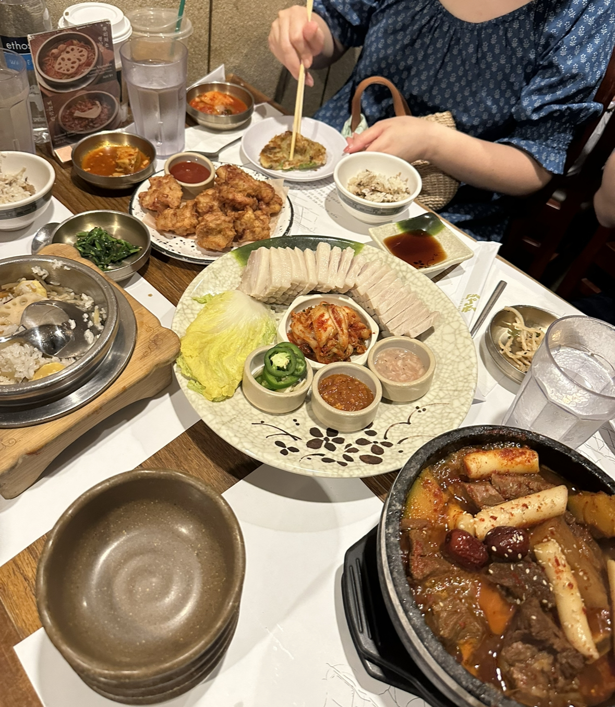 My favorite korean resturant in the city. Very homey and has the best side dishes. They specialize in tofu and make their own in house. The lines can be almost an hour long even on weekdays though, but just get on the waitlist, walk around, it’s a great way to build your appitite for the monsterous amount of food you will be consuming.
Kimura
Kimura
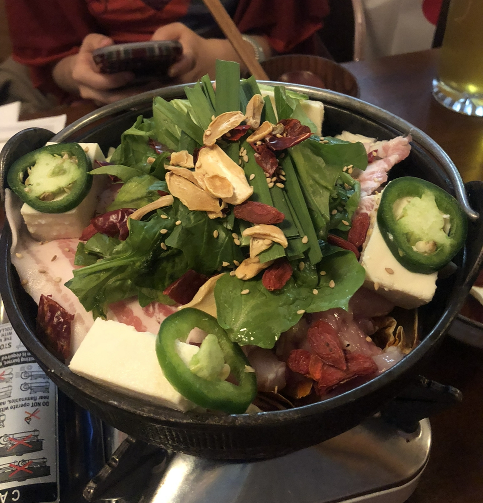 Amazing little shop tucked in Saint Marks st. The best japanese nabe or sukiyaki great for the winter months. Hard to get a spot inside without a reservation, but the outdoor seating is actually pretty nice and private.
Pranakhon
Pranakhon
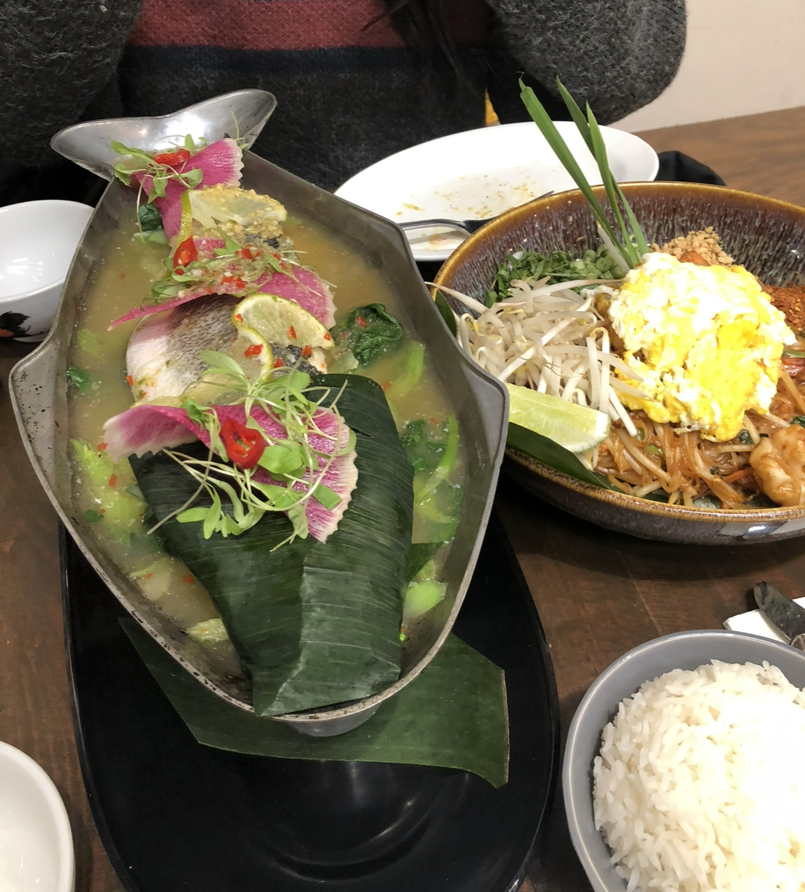 Solid Thai spot. Has a wide variety of dishes and lots of seating. Pretty authentic according to my questionable thai heritage standards. Recommendation: Pla Nung Manow - chili, garlic, lime steam fish
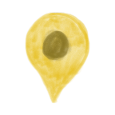
Dainobu
Dainobu
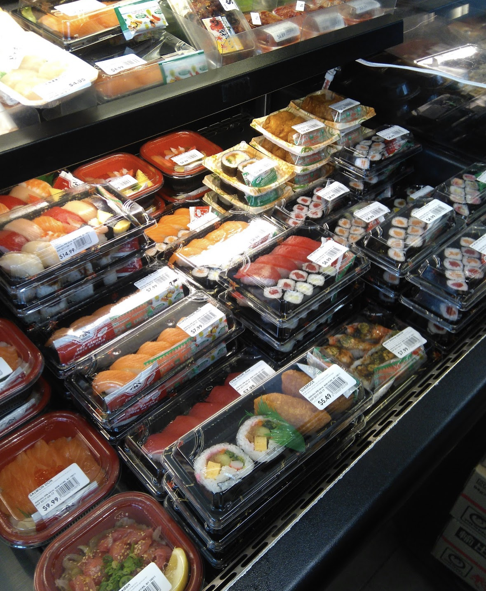 Great assortment of quick grab foods and premade meals for a late night in the studio. Pretty affordable, but the options do get sparse during high traffic times.
Mei Lai Wah
Mei Lai Wah
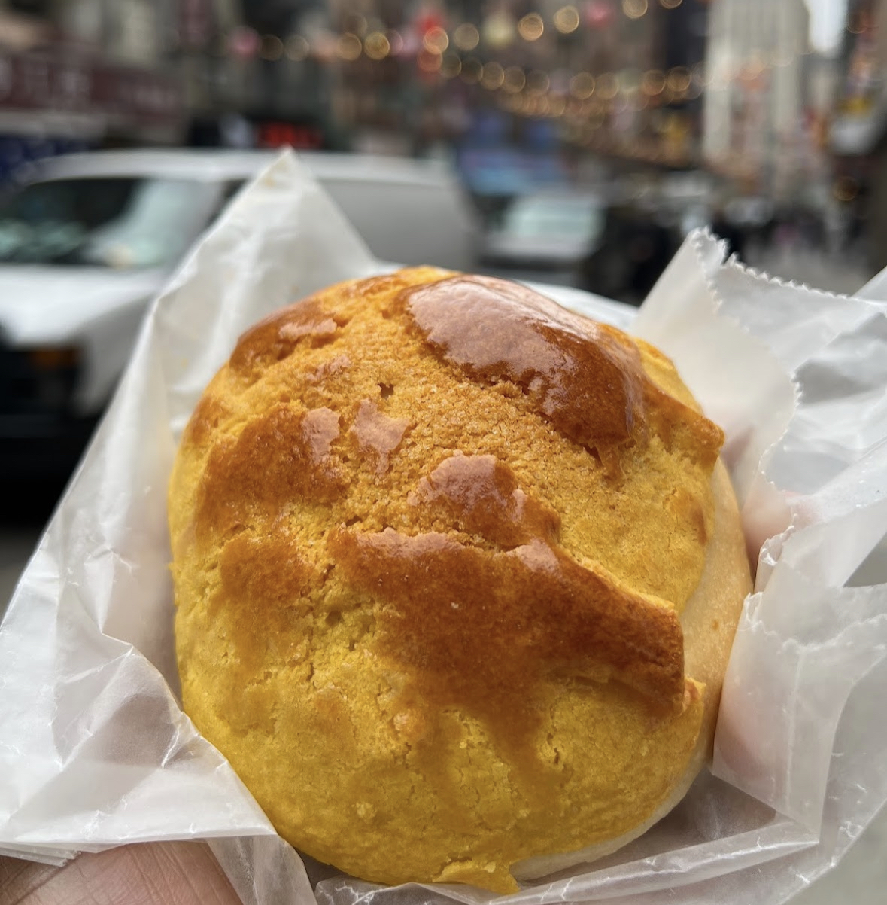 A bit overhyped and overcrowed by tourists, but their buns and baked goods are still really good. (just dont go on the weekends. Trust me.)
Jooy Tea
Jooy Tea
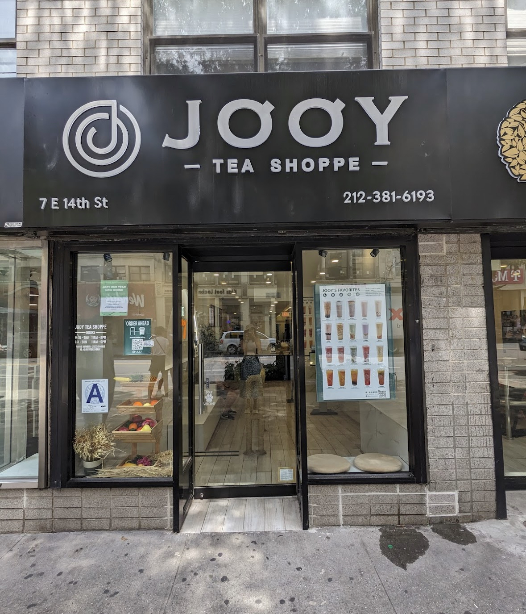 If you’re partial to slushes, fruit teas, and less traditional bbt this shop is the place to be. Lots of options and very satisfying midday bbt break. Recommendation: Wonder Grape
Cha-An
Cha-An
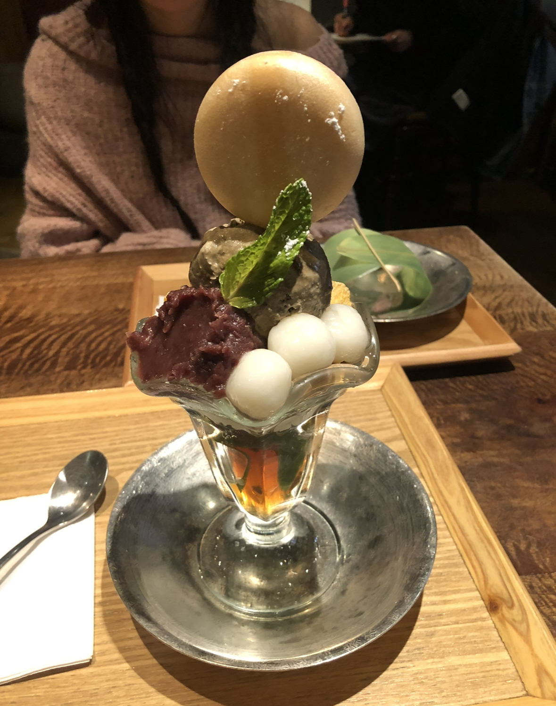 A very aesthetically pleasing japanese dessert shop. Has some really good ice cream parfaits and mochi that are not too sweet.
Fong On
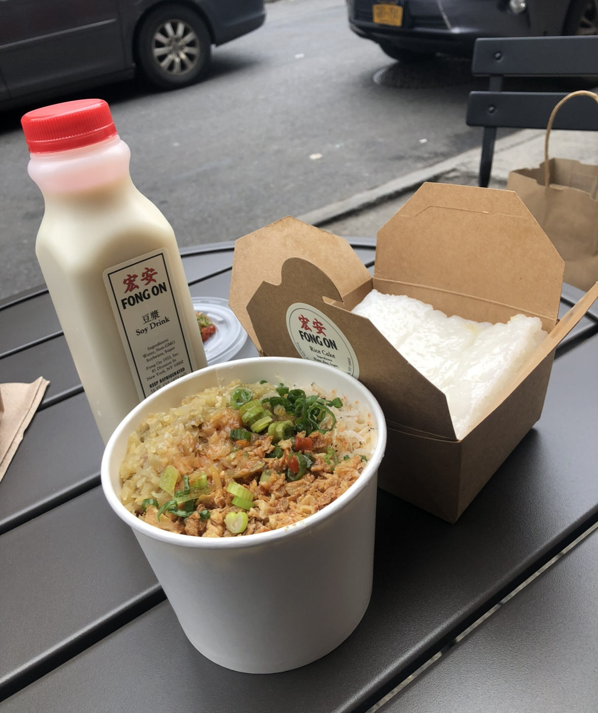 The best place for anything soy based. They have soy milk, dou hua (silken tofu dessert), and dou fu nao (silken tofu savory). A must stop in Chinatown.